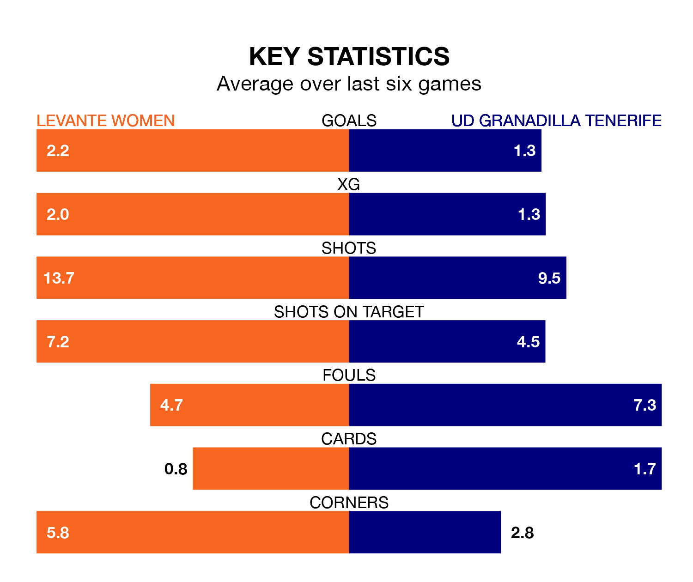

Levante Women are heavy favourites to keep all three points at home in Sunday's early kick-off against UD Granadilla Tenerife.
Levante, who sit third in Primera Division Women with 15 games played, are priced at 1.4 to seal victory at Ciudad Deportiva de Buñol-Campo 1.
Sitting five places and 14 points behind them in the table, Granadilla Tenerife are 6.3 to win with *Betting Company*, while the draw is at 4.4.
With Emma Holmgren between the sticks, Levante can rely on one of the league's safest pair of hands. She has kept seven clean sheets in her 14 appearances this season, and no 'keeper has prevented the opposition scoring more often in Primera Division Women.
In Granadilla Tenerife's net, Aline Villares Reis has four clean sheets in 16 games. She has conceded a goal every 63 minutes, more than twice as often as the 158 minutes between goals for Holmgren.
In the last 10 years, Levante and Granadilla Tenerife have played each other on 17 occasions. Levante won 13 of them, Granadilla Tenerife three, and they drew once.
On average, Levante scored 2.2 goals and Granadilla Tenerife 0.9 in those matches.
Their last meeting was on November 18, when Levante won 1-0 away.
With 20 goals in 16 games so far this season, the visitors are scoring at below the league average rate with 1.2 goals per game. But they are conceding fewer than average too, letting in 24 goals at a rate of 1.5 per game.
The home side, meanwhile, are above average scorers, with 1.9 goals per game, compared to a league average of 1.6. They have conceded 0.5 goals per game.
Levante are in good form in Primera Division Women, with four wins and a draw from their last six games.
With a win and four draws over that period, Granadilla Tenerife's form is much worse – they have taken seven points from 18, compared to Levante's 13.
Levante's last match was on February 3, a 1-0 win against Atletico Madrid Women, with Gabriela Nunes da Silva getting the goal for Levante.
Granadilla Tenerife drew 1-1 with Levante Las Planas last time out, on Sunday, with Gift Monday on the scoresheet.
Updated: 10:01 (UTC), 06/02/24